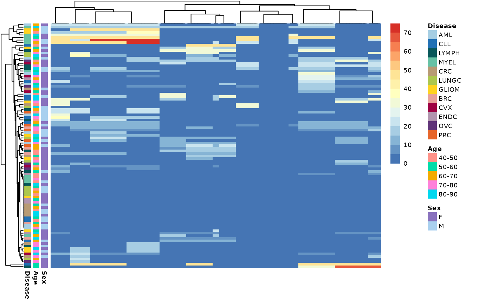
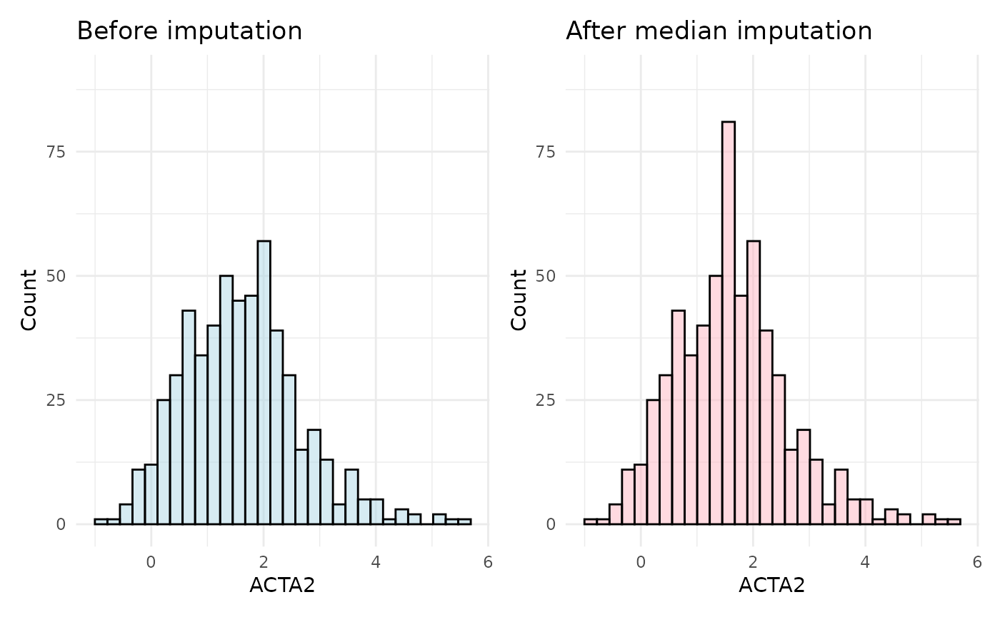
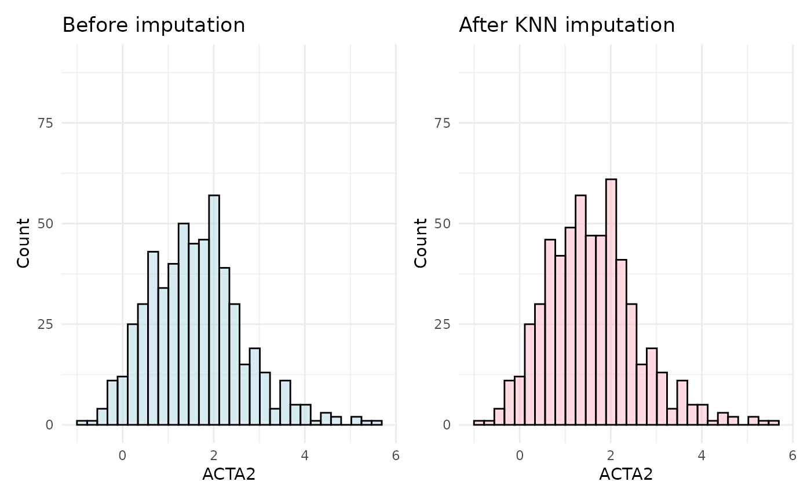
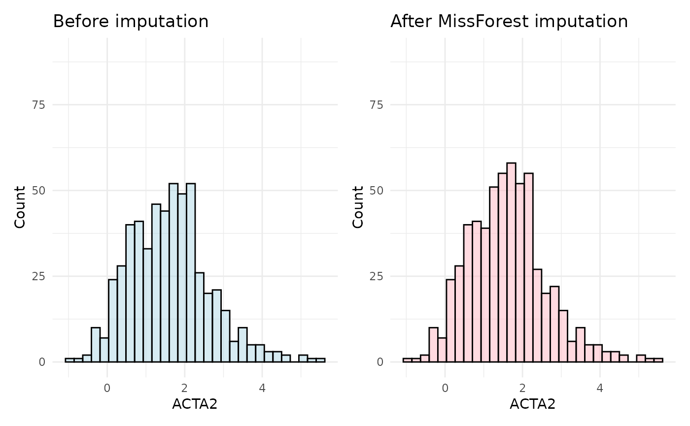
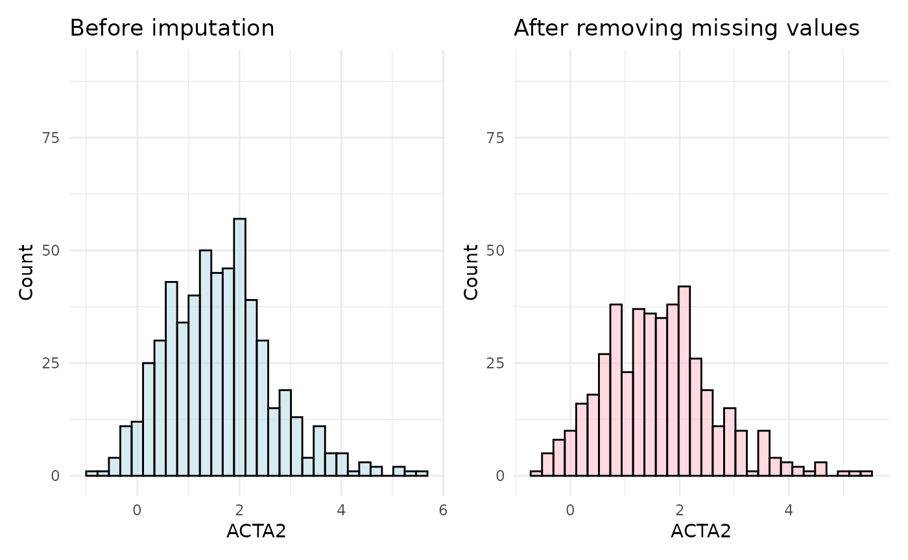

This vignette will guide you to the different imputation methods HDAnalyzeR offers. First of all, we will load the package, as well as dplyr, ggplot2 and patchwork for data manipulation and visualization. We will also load and widen the Olink example dataset.
Loading the Data
Let’s start with loading the example data and metadata that come with the package and initialize the HDAnalyzeR object.
hd_obj <- hd_initialize(dat = example_data,
metadata = example_metadata,
is_wide = FALSE,
sample_id = "DAid",
var_name = "Assay",
value_name = "NPX")Explore Missing Values
We can simply check our data for NA values by using the
hd_qc_summary() as we did in previous vignettes. This time
we will use something specific to NA
na_res <- hd_na_search(hd_obj,
annotation_vars = c("Sex", "Age", "Disease"),
palette = list(Disease = "cancers12",
Sex = "sex"),
x_labels = FALSE,
y_labels = FALSE)
na_res$na_heatmap
This heatmap is useful to evaluate if there are NA specific patterns in the data. In this case, we can see that the NA values are spread across the different Assays, samples and metadata variables. In this case, we can try impute them!
Imputation Methods
Median Imputation
We will start the imputation with the simplest and fastest method,
which is the median imputation by using the
hd_impute_median(). After the imputation, we will check the
sample distribution of a random Assay that contains missing values to
see if these values are imputed logically.
imputed_hd_obj <- hd_impute_median(hd_obj, verbose = FALSE)
plot_before <- hd_obj$data |>
ggplot(aes(x = ACTA2)) +
geom_histogram(fill = "lightblue", color = "black", alpha = 0.5, bins = 30) +
labs(title = "Before imputation",
x = "ACTA2", y = "Count") +
ylim(0, 90) +
theme_minimal()
plot_after <- imputed_hd_obj$data |>
ggplot(aes(x = ACTA2)) +
geom_histogram(fill = "lightpink", color = "black", alpha = 0.5, bins = 30) +
labs(title = "After median imputation",
x = "ACTA2", y = "Count") +
ylim(0, 90) +
theme_minimal()
plot_before + plot_after
As observed in the plots, the distribution of the ACTA2 assay shifts slightly after imputation, with an exaggerated median value in the imputed data. This highlights a key drawback of median imputation: the more missing values there are, the greater the potential bias.
KNN Imputation
A better approach is to use the hd_impute_knn() with 5
neighbors, which imputes missing values based on the 5-nearest
neighbors. We will use the same assay to compare the imputed data with
the original data.
imputed_hd_obj <- hd_impute_knn(hd_obj, k = 5, verbose = FALSE)
plot_before <- hd_obj$data |>
ggplot(aes(x = ACTA2)) +
geom_histogram(fill = "lightblue", color = "black", alpha = 0.5, bins = 30) +
labs(title = "Before imputation",
x = "ACTA2", y = "Count") +
ylim(0, 90) +
theme_minimal()
plot_after <- imputed_hd_obj$data |>
ggplot(aes(x = ACTA2)) +
geom_histogram(fill = "lightpink", color = "black", alpha = 0.5, bins = 30) +
labs(title = "After KNN imputation",
x = "ACTA2", y = "Count") +
ylim(0, 90) +
theme_minimal()
plot_before + plot_after
In this case, the distribution of the ACTA2 assay after imputation is more similar to the original distribution. This is because the KNN imputation method uses the nearest neighbors to impute missing values, which is more accurate and representative than median imputation.
MissForest Imputation
Finally, we will use the hd_impute_missForest() method,
which uses the random forest algorithm to impute missing values. We will
use the default values for the number of trees and the number of
iterations.
imputed_hd_obj <- hd_impute_missForest(hd_obj, verbose = FALSE)
plot_before <- hd_obj$data |>
ggplot(aes(x = ACTA2)) +
geom_histogram(fill = "lightblue", color = "black", alpha = 0.5, bins = 30) +
labs(title = "Before imputation",
x = "ACTA2", y = "Count") +
ylim(0, 90) +
theme_minimal()
plot_after <- imputed_hd_obj$data |>
ggplot(aes(x = ACTA2)) +
geom_histogram(fill = "lightpink", color = "black", alpha = 0.5, bins = 30) +
labs(title = "After MissForest imputation",
x = "ACTA2", y = "Count") +
ylim(0, 90) +
theme_minimal()
plot_before + plot_after
The MissForest imputation method is the most accurate and also very
robust, as it uses the random forest algorithm to impute missing values.
This method is particularly useful for large datasets with complex
relationships between variables. On the other hand, it is the most
computationally expensive and it would help parallelize it. You can do
that by creating and registering a cluster with a package like
doParallel and then setting the parallelize
argument to “forests” or “variables”.
📓 All methods assume that the data is missing at random, which is a common assumption in imputation methods. If the data are missing in a biased way (either technical or biological), the imputation methods may introduce bias into the data. In such cases, it is important to carefully consider the way the data were collected and what they represent.
Removing Missing Values instead of Imputing
If for any reason do not want to impute the data, you can use the
hd_omit_na() function to remove the rows with missing
values in specific variables. This function will remove all rows with
missing values in any of the assays.
imputed_hd_obj <- hd_omit_na(hd_obj)
plot_before <- hd_obj$data |>
ggplot(aes(x = ACTA2)) +
geom_histogram(fill = "lightblue", color = "black", alpha = 0.5, bins = 30) +
labs(title = "Before imputation",
x = "ACTA2", y = "Count") +
ylim(0, 90) +
theme_minimal()
plot_after <- imputed_hd_obj$data |>
ggplot(aes(x = ACTA2)) +
geom_histogram(fill = "lightpink", color = "black", alpha = 0.5, bins = 30) +
labs(title = "After removing missing values",
x = "ACTA2", y = "Count") +
ylim(0, 90) +
theme_minimal()
plot_before + plot_after
# Data after removing missing values only in specific columns
res <- hd_omit_na(hd_obj, columns = "AARSD1")
res$data
#> # A tibble: 552 × 101
#> DAid AARSD1 ABL1 ACAA1 ACAN ACE2 ACOX1 ACP5 ACP6 ACTA2
#> <chr> <dbl> <dbl> <dbl> <dbl> <dbl> <dbl> <dbl> <dbl> <dbl>
#> 1 DA00001 3.39 2.76 1.71 0.0333 1.76 -0.919 1.54 2.15 2.81
#> 2 DA00002 1.42 1.25 -0.816 -0.459 0.826 -0.902 0.647 1.30 0.798
#> 3 DA00004 3.41 3.38 1.69 NA 1.52 NA 0.841 0.582 1.70
#> 4 DA00005 5.01 5.05 0.128 0.401 -0.933 -0.584 0.0265 1.16 2.73
#> 5 DA00006 6.83 1.18 -1.74 -0.156 1.53 -0.721 0.620 0.527 0.772
#> 6 DA00008 2.78 0.812 -0.552 0.982 -0.101 -0.304 0.376 -0.826 1.52
#> 7 DA00009 4.39 3.34 -0.452 -0.868 0.395 1.71 1.49 -0.0285 0.200
#> 8 DA00010 1.83 1.21 -0.912 -1.04 -0.0918 -0.304 1.69 0.0920 2.04
#> 9 DA00011 3.48 4.96 3.50 -0.338 4.48 1.26 2.18 1.62 1.79
#> 10 DA00012 4.31 0.710 -1.44 -0.218 -0.469 -0.361 -0.0714 -1.30 2.86
#> # ℹ 542 more rows
#> # ℹ 91 more variables: ACTN4 <dbl>, ACY1 <dbl>, ADA <dbl>, ADA2 <dbl>,
#> # ADAM15 <dbl>, ADAM23 <dbl>, ADAM8 <dbl>, ADAMTS13 <dbl>, ADAMTS15 <dbl>,
#> # ADAMTS16 <dbl>, ADAMTS8 <dbl>, ADCYAP1R1 <dbl>, ADGRE2 <dbl>, ADGRE5 <dbl>,
#> # ADGRG1 <dbl>, ADGRG2 <dbl>, ADH4 <dbl>, ADM <dbl>, AGER <dbl>, AGR2 <dbl>,
#> # AGR3 <dbl>, AGRN <dbl>, AGRP <dbl>, AGXT <dbl>, AHCY <dbl>, AHSP <dbl>,
#> # AIF1 <dbl>, AIFM1 <dbl>, AK1 <dbl>, AKR1B1 <dbl>, AKR1C4 <dbl>, …In this vignette we showed that via HDAnalyzeR the user can impute their data with different methods, each of them with its own advantages and drawbacks. The user can choose the method that best fits their data and their analysis needs. When using KNN or MissForest imputation methods, the user should experiment with the parameters and look at the distributions of assays before and after to pick the most suitable.
📓 Remember that these data are a dummy-dataset with artificial data and the results in this guide should not be interpreted as real results. The purpose of this vignette is to show you how to use the package and its functions.